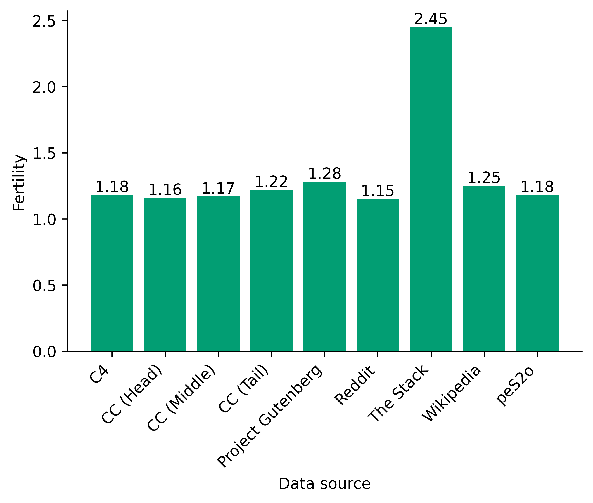
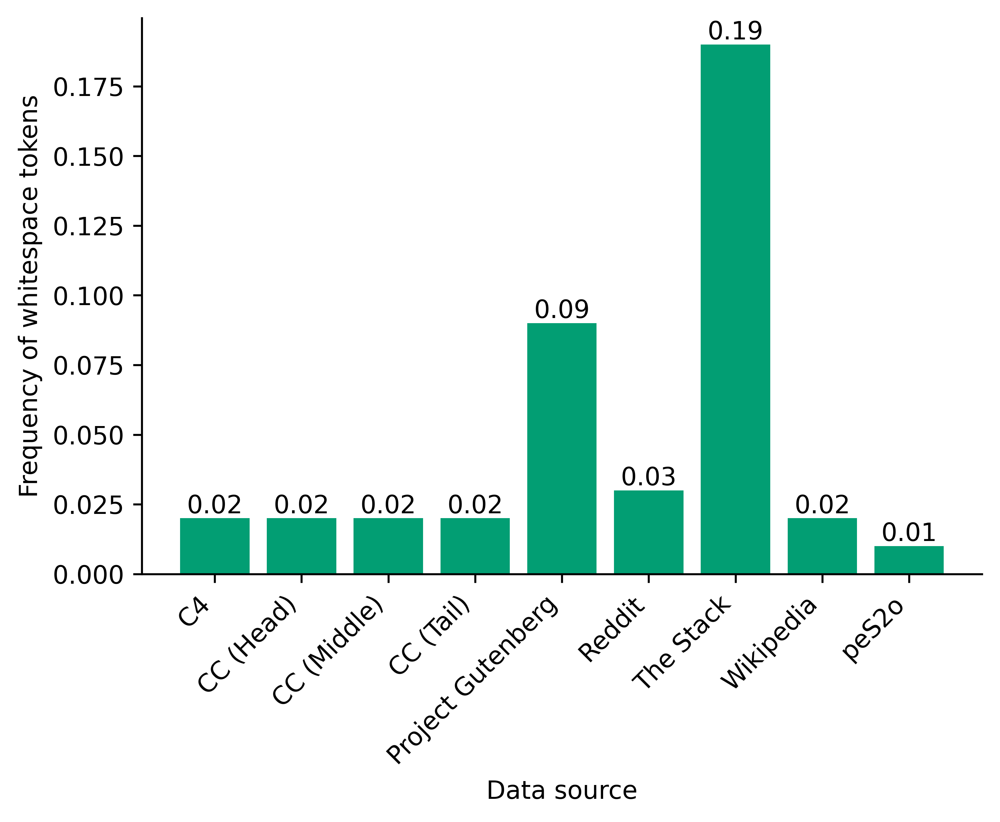
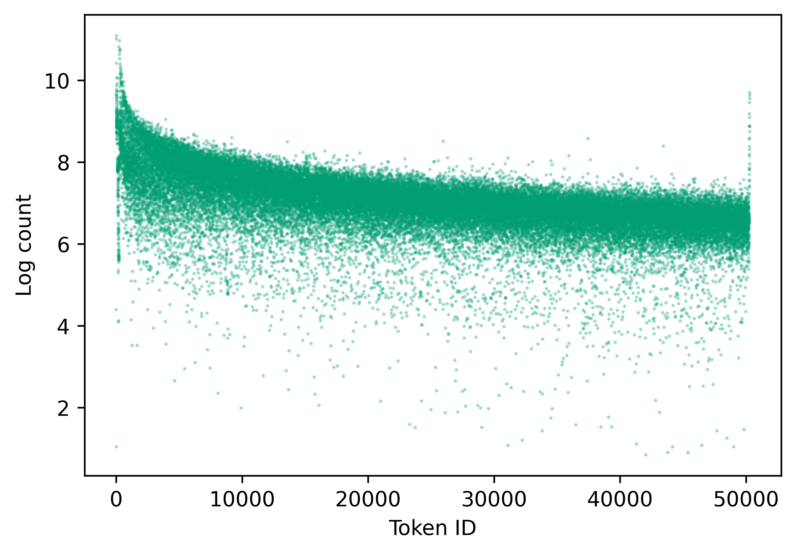
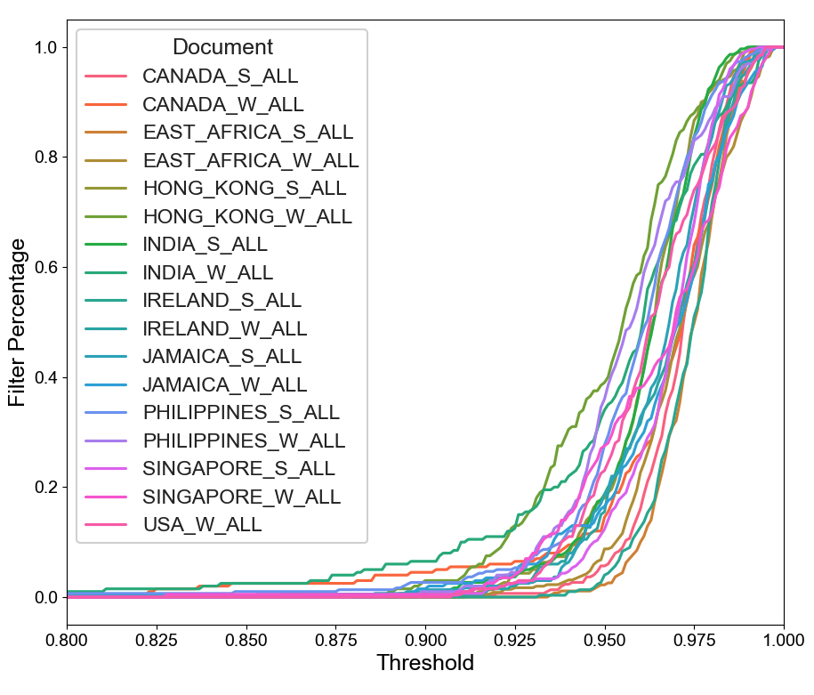
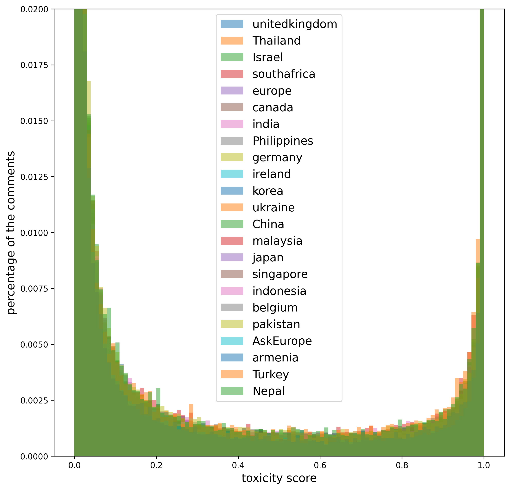

一句话总结:Dolma 是 AI2 开源的 3T tokens 英文预训练语料(11 TB 文本,4.37B 文档,来自 6 个域),并配套 Dolma Toolkit(Rust 高性能 mixer + filter)完整披露"采集 → 语言过滤 → 质量/内容过滤 → 去重 → 去污染 → 混合"全 pipeline,所有数据决策都用 1.2B OLMo 在 150B tokens 上做 ablation 给出证据。
🎯 面试考点(高频):
2,479B(81%)、GitHub 代码 411B(StarCoder/RedPajama 过滤)、Reddit 社交 89B、Semantic Scholar(peS2o)论文 70B、Wikipedia/Wikibooks 百科 4.3B、Project Gutenberg 公版书 6.0B。原始 200 TB → 11 TB,~18× 压缩。|||EMAIL_ADDRESS|||,>5 整篇删。53.2% 文档,后续 document 又掉 14.9%,paragraph 掉 18.7%。代码子集复用 The Stack,The Stack 内部用 MinHash + LSH(near-dup),所以 Dolma-Code 是"已 MinHash 过的语料 + Bloom 兜底"。
① 图说明:Appendix 中"tokenizer fertility"图——每个数据源在 GPT-NeoX tokenizer 下平均"一个 Unicode 词被切成几个 subword"。横轴 = Dolma 各子集(C4 / CC Head&Middle&Tail / Project Gutenberg / Reddit / The Stack / Wikipedia / peS2o),纵轴 = fertility。
② 关键数据:自然语言源都集中在 1.15–1.28(Reddit 最低 1.15,Project Gutenberg 1.28);The Stack 异常飙到 2.45——代码里大量标识符、分隔符切分粒度高;peS2o(学术)1.18,与网页相仿,说明 cleanup 后 LaTeX/数学符号已被合理处理。
③ 启示:这张图回答了"Table 1 的 token 数怎么折算"的暗坑——用 LLaMA tokenizer 算的 3T,如果换 GPT-NeoX 之类对代码不友好的 tokenizer,Dolma-Code 的 token 数会显著放大。这也是为什么不同语料之间比较 token 数时,必须先固定一个 tokenizer——论文整张 Table 1 都用 LLaMA tokenizer 折算就是为此。

① 图说明:每个数据源的"whitespace token 频率"——也就是 tokenizer 产生的纯空白 token 在该子集中占的比例。横轴同上,纵轴 = 比例。
② 关键数据:C4 / CC 全段 / Wikipedia / peS2o 都贴近 0.02(2%);Reddit 0.03 略高,Project Gutenberg 0.09(书有更多对齐排版),The Stack 高达 0.19(19% 是缩进/换行)。
③ 启示:当你把代码塞进预训练时,要意识到"近 1/5 的 token 是缩进",这对 Chinchilla 比例计算、对训练效率、对长上下文的有效信息密度都有显著影响——这也是后续 OLMo / DeepSeek 在数据混合时单独对 code/whitespace 做归一化的动机。

① 图说明:Appendix 中 Dolma 上 token 频次的散点图——横轴是 GPT-NeoX tokenizer 的 token ID(0–50k),纵轴是该 token 在 Dolma 中出现次数的 log(以 e 为底)。每一点就是词表里的一个 token。
② 关键数据:整体呈现明显的"两条带":上方密集云 ≈ log count = 6–9(即 400–8000 次),下方稀疏带 ≈ log count = 5–7(150–1000);ID = 0 附近和最右端(50256 周围)出现"竖向尖峰",对应 BOS / EOS / 特殊符号 与高频功能词。长尾不是 Zipf 的整齐曲线,而是带宽较宽,说明 Dolma 中存在大量 近常用但又不极端高频 的 token。
③ 启示:这张图用来反驳"语料质量不够 → 长尾 token 频次过低"的疑虑——Dolma 的下界 token 仍能出现几十到几百次,意味着 50k vocab 在 3T tokens 量级是"被充分覆盖的"。对实际训练来说,这也是为什么 1B 模型在 Dolma 上 zero-shot 表现已能匹配 TinyLlama:足够厚的语料让 embedding 收敛得稳定。

① 图说明:FastText 英文语言识别分数(横轴 0.80–1.00)与 文档级 filter percentage(纵轴)的累积曲线;每条线对应一个英语方言地区子集——CANADA / EAST_AFRICA / HONG_KONG / INDIA / IRELAND / JAMAICA / PHILIPPINES / SINGAPORE / USA,后缀 S_ALL = strict 全部、W_ALL = weak 全部。
② 关键数据:所有曲线在阈值 0.95 左右开始陡升,到 0.97–0.98 几乎全部命中。论文采用阈值 0.5 已是非常宽松的下界,但要注意:即便阈值 0.5,不同英语方言区(尤其 HONG_KONG / INDIA / PHILIPPINES 这类 World English)被 FastText 误判风险显著高于 USA/CANADA;阈值若拉到 0.95+,会系统性砍掉非西方英语方言。
③ 启示:Dolma 的"英文 ≥ 0.5"是一种公平性折中——CCNet 默认阈值更紧,会把方言英语当作非英语丢掉,从而放大语料里西方英语的代表性偏差。这是后续 Llama 3 等更注重多方言英语时,会重新审视的过滤参数。

① 图说明:Reddit 子集上,自训 FastText 毒性分类器(toxicity score)在不同地区子论坛上的评分分布直方图(纵轴是该地区评论中得到该分值的比例),覆盖 24 个国家/地区 subreddit(united kingdom / Thailand / ... / Nepal)。
② 关键数据:所有地区都呈现强烈的 U 形双峰:绝大多数评论得分在 0.0–0.05 或 0.95–1.0 附近,中间 0.2–0.8 区段非常稀疏。这正是论文 §5.3 选择 τ=0.4("High Threshold")或 τ=0.0004("Low")的依据——分布的"中间真空"使得阈值并不敏感,但两端的取舍直接决定丢多少数据。
③ 启示:① 自训分类器的"置信度"在数据上看是双极化的,而不是均匀的——所以阈值不能凭"中位数"拍;② 各地区 subreddit 的曲线几乎重合,说明该 hate/NSFW 分类器没有强地区偏差(至少在评分分布层面);③ 实践中常用"看分布拍阈值",而不是"按比例砍 N%"——Dolma 选 0.4 保住了 token 数,Llama 系常用更严格的二阶段过滤。
Dolma : an Open Corpus of Three Trillion Tokens for Language Model Pretraining Research Luca Soldaini ♥α Rodney Kinney♥α Akshita Bhagia♥α Dustin Schwenk♥α David Atkinsonα Russell Authurα Ben Boginα ω Khyathi Chanduα Jennifer Dumasα Yanai Elazarα ω Valentin Hofmannα Ananya Harsh Jhaα Sachin Kumarα Li Lucyβ Xinxi Lyuω Nathan Lambertα Ian Magnussonα Jacob Morrisonα Niklas Muennighoff Aakanksha Naikα Crystal Namα Matthew E. Petersσ Abhilasha Ravichanderα Kyle Richardsonα Zejiang Shenτ Emma Strubellχα Nishant Subramaniχ α Oyvind Tafjordα Pete Walshα Luke Zettlemoyerω Noah A. Smithα ω Hannaneh Hajishirziα ω Iz Beltagyα Dirk Groeneveldα Jesse Dodgeα Kyle Lo♥α αAllen Institute for AI βUniversity of California, Berkeley χCarnegie Mellon University σSpiffy AI τMassachusetts Institute of Technology ωUniversity of Washington {lucas,kylel}@allenai.org
Information about pretraining corpora used to train the current best-performing language models is seldom discussed: commercial models rarely detail their data, and even open models are often released without accompanying training data or recipes to reproduce them. As a result, it is challenging to conduct and advance scientific research on language modeling, such as understanding how training data impacts model capabilities and limitations. To facilitate scientific research on language model pretraining, we curate and release Dolma, a three-trillion-token English corpus, built from a diverse mixture of web content, scientific papers, code, public-domain books, social media, and encyclopedic materials. We extensively document Dolma, including its design principles, details about its construction, and a summary of its contents. We present analyses and experimental results on intermediate states of Dolma to share what we have learned about important data curation practices. Finally, we open-source our data curation toolkit to enable reproduction of our work as well as support further research in large-scale data curation.
hf.co/datasets/allenai/dolma · github.com/allenai/dolma
用于训练当前最强语言模型的"预训练语料"细节几乎从不被公开讨论:商用模型很少透露数据,即便是开源模型也常常只放权重而不带训练数据或可复现的配方。结果,关于语言建模的科学研究(例如理解训练数据如何影响模型能力与局限)难以推进。为了支持这类研究,我们整理并发布 Dolma——一个三万亿(3T)token 的英文语料,由网页内容、科学论文、代码、公版书、社交媒体、百科材料等多源混合而成。我们对 Dolma 做了详尽的文档化,包括设计原则、构建细节与内容概览;并在 Dolma 中间产物上做分析与实验,分享我们关于数据整理实践的经验教训。最后,我们开源整套数据整理工具链,既可复现本工作,也可支持后续大规模数据整理研究。
资源:hf.co/datasets/allenai/dolma · github.com/allenai/dolma
Language models are now central to tackling myriad natural language processing tasks, including few-shot learning, summarization, question answering, and more. Increasingly, the most powerful language models are built by a few organizations who withhold most model development details (Anthropic, 2023; OpenAI, 2023; Anil et al., 2023; Gemini Team et al., 2023). In particular, the composition of language model pretraining data is often vaguely described, even in cases where the model itself is released for public use, such as Llama 2 (Touvron et al., 2023b). This hinders understanding of the effects of pretraining corpus composition on model capabilities and limitations, with impacts on scientific progress as well as on the public who interfaces with these models.
语言模型如今已成为解决大量自然语言处理任务的核心:few-shot 学习、摘要、问答等。然而,越来越多的"最强模型"是由少数几家机构构建,他们对模型开发细节守口如瓶(Anthropic 2023、OpenAI 2023、Anil 等 2023、Gemini Team 2023)。尤其是,语言模型预训练数据的构成几乎不被披露,哪怕是 Llama 2 这种"模型本身公开发布"的情况也常常只用模糊语言带过。这阻碍了人们理解"预训练语料构成如何影响模型能力与局限",对科学进展和与这些模型交互的公众都有负面影响。
Our aim is to increase participation in scientific research of language models through open corpora:
• Data transparency helps developers and users of applications that rely on language models to make more informed decisions (Gebru et al., 2021). For example, models have shown to perform better on tasks that are more similar to their pretraining data (Razeghi et al., 2022; Kandpal et al., 2023), or social biases in models' pretraining data may necessitate additional consideration when using them.
• Open pretraining data is necessary to analyze how its composition influences model behavior, allowing those training models to interrogate and improve current data practices. Examples of this research include memorization (Carlini et al., 2022), deduplication (Lee et al., 2022), adversarial attacks, benchmark contamination, and training data attribution.
我们的目标是通过开放语料,扩大语言模型科研的参与门槛:
• 数据透明性能帮助"依赖语言模型的应用"的开发者与用户做出更有信息含量的决策。例如,模型在"与预训练数据更相似"的任务上表现更好(Razeghi 等 2022;Kandpal 等 2023);预训练数据中的社会偏见也可能要求使用时格外审慎。
• 开放预训练数据是分析"语料构成如何影响模型行为"的前提,使训练者得以审视并改进当前数据实践。这类研究的例子包括:记忆(Carlini 等 2022)、去重(Lee 等 2022)、对抗攻击、基准污染、训练数据归因。
To support broader participation and inquiry in these lines of research, we present Data for Open Language Models' Appetite (Dolma), an open corpus of three trillion tokens designed to support language model pretraining research. We source much of our data from sources similar to those present in past work, including a mix of web text from Common Crawl, scientific research from Semantic Scholar, code from GitHub, public domain books, social media posts from Reddit, and encyclopedic materials from Wikipedia. Compared to other publicly-available pretraining corpora, Dolma offers a larger pool of tokens at comparable quality while maintaining diverse data composition. In summary, our contributions are two-fold:
• We release the Dolma Corpus, a diverse, multi-source collection of 3T tokens across over 4B documents acquired from 6 different data sources that are (i) commonly seen in large-scale language model pretraining and (ii) made accessible to the general public. Table 1 provides a high-level overview of the amount of data from each source.
• We open source the Dolma Toolkit, a high-performance, portable tool designed to efficiently curate large datasets for language model pretraining. Through this toolkit, practitioners can not only reproduce our dataset, but also study and improve data curation practices.
为支持这些研究方向上更广泛的参与与探究,我们提出 Data for Open Language Models' Appetite(Dolma)——一个面向语言模型预训练研究的、3 万亿 token 的开放语料。其大部分数据源与以往工作类似:Common Crawl 网页、Semantic Scholar 学术论文、GitHub 代码、公版书、Reddit 社交、Wikipedia 百科。相比其它公开预训练语料,Dolma 在保持多样化数据构成的同时,提供了更大的、可比质量的 token 池。我们的两项主要贡献是:
• 发布 Dolma 语料——一个多源、多样化的 3T tokens / 40 亿+文档集合,来自 6 个数据源,均(i)在大规模语言模型预训练中常见,且(ii)对公众开放可访问。Table 1 给出各源数据量的概览。
• 开源 Dolma Toolkit——一个高性能、可移植的工具,用于高效整理大规模预训练数据。借助这套工具,实践者不仅能复现我们的数据集,也能研究和改进数据整理实践。
Table 1: The Dolma corpus at-a-glance. It consists of three trillion tokens sampled from a diverse set of domains; sourced from approximately 200 TB of raw text before curation down to an 11 TB dataset. Tokens calculated using the LLaMA tokenizer.
| Source | Doc Type | UTF-8 GB | Docs (M) | Words (B) | LLaMA tokens (B) |
|---|---|---|---|---|---|
| Common Crawl | web pages | 9,812 | 3,734 | 1,928 | 2,479 |
| GitHub | code | 1,043 | 210 | 260 | 411 |
| social media | 339 | 377 | 72 | 89 | |
| Semantic Scholar | papers | 268 | 38.8 | 50 | 70 |
| Project Gutenberg | books | 20.4 | 0.056 | 4.0 | 6.0 |
| Wikipedia, Wikibooks | encyclopedic | 16.2 | 6.2 | 3.7 | 4.3 |
| Total | — | 11,519 | 4,367 | 2,318 | 3,059 |
Table 1 — Dolma 语料一览。共 3 万亿 token,采样自一组多样化的数据域;原始 200 TB 文本,经整理降至 11 TB(~18× 压缩)。Token 数按 LLaMA tokenizer 折算。
读图要点:① Web ≈ 81% token(2,479B / 3,059B),是绝对主体;② 代码 411B(13%);③ Reddit + Semantic Scholar + 书 + Wiki 合计仅 ~6%,但提供"非网页多样性",对 Paloma 等 stratified 评测极其关键(见 Figure 5);④ 文档量上 Common Crawl 3.7B 占 86%,但每篇平均字节最大;Project Gutenberg 才 5.6 万本却带来高质量长文。
Closed data curation practices. Modern pretraining corpora have become increasingly opaque: proprietary systems such as GPT-4, PaLM 2 and Claude reveal essentially nothing about corpus size or provenance, and even "open-weight" models (Llama 2, Mistral, Yi, Qwen) ship without their data or a reproducible recipe. Among large-scale efforts, only a handful publish detailed curation notes: LLaMA documents methods (data not released), Gopher documents methods (neither model nor data released), and Falcon partially releases its data. This trend toward closure motivates Dolma's open-data + open-toolkit stance.
语言模型预训练中的"封闭式"数据整理实践。当下的预训练语料越来越不透明:GPT-4、PaLM 2、Claude 等专有系统几乎不披露语料规模与来源;即便是"开权重"模型(Llama 2、Mistral、Yi、Qwen)也只放模型不放数据、也不给可复现的配方。在大规模预训练工作里,只有少数有详尽的整理文档:LLaMA 公开了方法但不放数据,Gopher 方法与模型/数据都未发布,Falcon 部分发布数据。这种"逐步封闭"的趋势,正是 Dolma 选择"数据开 + 工具链开"双开放姿态的动机。
Existing open corpora and why a new one was needed. Prior open corpora have limitations: C4 (175B) and Pile (387B) are high quality but small; ROOTS (~400B) is multilingual so its English slice is only ~30%, too thin for English-only models; Falcon (580B) and RedPajama v2 (30T) hit scale but are entirely Common-Crawl — they lack source diversity (no papers, no code) and RedPajama v2 is only lightly cleaned (essentially raw CCNet output). RedPajama v1 (~1.2T) is the closest cousin and inspired Dolma, but it reproduces LLaMA narrowly; Dolma broadens to peS2o / Reddit and adds heavier cleanup. Concurrent releases (FineWeb, Zyda, LLM360 Amber/K2, MAP-Neo) appeared during review.
已有开放语料的局限与 Dolma 的差异点。以往的开放语料各有短板:C4(175B)与 Pile(387B)质量高但太小;ROOTS(~400B)是多语言的,英文部分只占 ~30%,对纯英文模型仍嫌不够;Falcon(580B)和 RedPajama v2(30T)规模到位,但全部来自 Common Crawl,缺乏来源多样性(没有论文、没有代码),且 RedPajama v2 几乎只是 CCNet 原始输出、做的清洗很轻。最接近 Dolma 的是 RedPajama v1(~1.2T),它启发了本工作,但其复现目标仅限 LLaMA;Dolma 把范围扩展到 peS2o 学术语料和 Reddit 社交,并补上更重的清洗。本文评审期间,FineWeb、Zyda、LLM360 Amber/K2、MAP-Neo 等同期开放语料也相继发布。
Four explicit design goals drove every decision. (i) Consistency with prior recipes: match sources/methods used by known corpora so Dolma can be used to scrutinize today's LMs, including closed ones; this also drives the English-only scope. (ii) Evidence-backed choices: where best practice is unsettled or implementations differ, pick the option that maximizes downstream performance via the §4.2 ablation pipeline. (iii) Scale: target 2–3T tokens so future Chinchilla-style scaling-law studies remain possible. (iv) Preserve openness: deviate from established recipes when needed for legal/ethical reasons — e.g., drop Books3 (active copyright litigation) and add PII filtering even though prior recipes rarely document it.
四条显式设计原则贯穿整套决策。(i) 与既有配方保持一致:尽量匹配已公开语料用过的来源和方法,让 Dolma 可被用来"审视"如今的 LM(包括闭源模型);这同时也是 Dolma 定为纯英文的原因。(ii) 用证据做决策:在没有公认最佳实践、或不同实现细节有差异时,以 §4.2 的消融流水线为准,选择"对下游性能最有利"的方案。(iii) 足够规模:目标 2–3T tokens,使后续 Chinchilla 风格的 scaling-law 研究仍有空间。(iv) 守住开放性:在开放发布要求下,会出于法律/伦理考虑偏离既有配方——例如剔除 Books3(目前正深陷版权诉讼);加入 PII 过滤(以往配方几乎不讨论)。
§4.1 The Dolma Toolkit. The pipeline is implemented as a high-performance, open-sourced toolkit with two operations: filtering and mixing. Filtering unifies language/quality/content/PII filters into a single config-driven runner — a text unit (document, paragraph, sentence), a scorer (linear classifier, KenLM perplexity, regex), and a removal policy (delete, replace-with-string). Throughput on a C4-replication benchmark was 122 CPU-hours per TB, so processing the full ~200 TB raw Dolma on a 192-vCPU c6a.48xlarge takes about 5 days. Mixing unifies up/down-sampling, deduplication and decontamination into one Rust module that streams documents across files; up-sampling = reading the same path repeatedly. A built-in Bloom filter (Bloom 1970) gives linear-time probabilistic duplicate detection — and is repurposed for test-set decontamination by seeding it with eval examples and flagging any train-side hits.
§4.1 Dolma 工具链。整套流水线被实现为高性能、开源的工具集,内置两个基本操作:filtering(过滤)与 mixing(混合)。filtering 把语言识别、质量、内容、PII 等过滤统一为一个配置驱动的执行器——配置由"文本单元(document / paragraph / sentence)+ 打分器(线性分类器、KenLM 困惑度、正则)+ 删除策略(删除 / 替换为占位 token)"三元组组成。在内部复现 C4 配方的基准上,该工具吞吐为 122 CPU 小时/TB;按此估算,在 192 vCPU 的 c6a.48xlarge 上跑完 ~200 TB 原始 Dolma 约需 5 天。mixing 把上/下采样、去重(dedup)与去污染(decontamination)统一为一个 Rust 模块,跨文件流式混合文档——上采样就是反复读同一份文件路径。模块内置 Bloom filter(Bloom 1970),提供线性时间的概率级重复检测;同一个基础设施被复用来做测试集去污染——把评测样本作为 seed 灌入 Bloom filter,训练阶段命中即丢。
§4.2 Data ablations. Every non-trivial curation decision is validated by training a 1.2B-parameter OLMo-family decoder-only LM on the dataset under that intervention and comparing against a baseline on a fixed 8-task zero-shot evaluation suite (ARC-E/C, BoolQ, HellaSwag, OpenBookQA, PIQA, SciQ, WinoGrande). Models are early-stopped at 150B tokens — full training would be prohibitive across so many sweeps. Tasks were chosen to (i) match prior LM evaluation practice, (ii) span QA + commonsense reasoning, and (iii) avoid being contaminated by Dolma itself (full contamination report in Appendix §L). Evaluation casts each task as ranked text classification with PromptSource prompts, à la the Eleuther harness.
§4.2 数据消融方案。每一个非平凡的整理决策都要通过消融来验证:在该决策下整理出的数据上,训一个 1.2B 参数的 OLMo 家族 decoder-only LM,然后在固定的 8 任务 zero-shot 评测套件(ARC-E/C、BoolQ、HellaSwag、OpenBookQA、PIQA、SciQ、WinoGrande)上与基线比较。由于训练完整规模过于昂贵,所有消融模型都在 150B tokens 处提前停止。任务选择标准:(i) 沿用过往 LM 评测惯例;(ii) 覆盖 QA + 常识推理的多样能力;(iii) 不被 Dolma 自身污染(完整污染分析见附录 §L)。评测形式是把每个任务转写为带排名的文本分类,使用 PromptSource 的 prompt,实现接近 Eleuther 评测套件。
§5 Dolma-Web overview. The web subset contributes ~2.28T tokens drawn from Common Crawl. CC is organized into snapshots (full re-crawls over seed URLs); as of Feb 2024 there are 97 snapshots, and Dolma uses 25 snapshots spanning 2020-05 to 2023-06. Only enough snapshots were downloaded to hit the 2–3T token target, assuming ~10× shrinkage after all cleanup.
§5 Dolma-Web 概览。网页子集贡献 ~2.28T tokens,全部从 Common Crawl 采得。CC 组织为快照(snapshot)——每个快照是对 seed URL 的一次完整爬取;截至 2024-02 共 97 个快照,Dolma 用了其中跨 2020-05 至 2023-06 的 25 个。出于存储与算力考虑,只下载"够用"的数量——以"全套清洗后 ~10× 缩水"反推目标 2–3T token。
§5.1 Acquisition + language filtering (CCNet). The web pipeline begins with CCNet (Wenzek et al. 2020), the same first-stage tool used by LLaMA / RedPajama v1 / RedPajama v2. CCNet routes each page through a FastText language-ID model and Dolma keeps pages with English score ≥ 0.5 — this alone removes 61.7% of bytes. CCNet additionally removes very-common paragraphs within each snapshot shard group; that step strips ~70% of paragraphs (mostly headers and navigation chrome). End-to-end, CCNet pipeline drops Common Crawl from 175.1 TB → 27.7 TB (84.2% gone) before Dolma's own filters even start.
§5.1 采集 + 语言过滤(CCNet)。网页流水线第一步是 CCNet(Wenzek 等 2020)——LLaMA / RedPajama v1 / RedPajama v2 也都用它作首站。CCNet 给每个页面跑 FastText 语言识别模型,Dolma 选择 英文得分 ≥ 0.5 即保留——单这一步就按字节数砍掉 61.7%。CCNet 还会把每个 snapshot 内的 shard 分小组,在组内移除"极其常见的段落"——这一步又砍掉 ~70% 的段落(主要是页眉、导航栏)。两步合在一起,Common Crawl 从 175.1 TB 收缩到 27.7 TB(共砍掉 84.2%),Dolma 自己的过滤器此时才正式上场。
§5.2 Heuristic quality filters (Gopher + C4 NoPunc). Following Rae et al. (Gopher) and Almazrouei et al. (Falcon), Dolma avoids model-based quality classifiers and instead combines two heuristic stacks: Gopher All (keep all Gopher rules) plus a single C4 rule — C4 NoPunc, which drops paragraphs that do not end in punctuation. The §1 ablation shows C4 NoPunc alone beats both C4 All and Gopher All on perplexity and downstream tasks, and the combination Gopher All + C4 NoPunc is best overall. On the chosen recipe, Gopher All tags 15.23% of UTF-8 chars for removal and C4 NoPunc tags 22.73%. Separately, CCNet ships a KenLM-perplexity bucket (Wikipedia-likeness; high/med/low ≈ 21.9 / 28.5 / 49.6%); heuristic filtering left those bucket proportions essentially unchanged — suggesting model-based quality signals capture an orthogonal axis to heuristics.
§5.2 启发式质量过滤(Gopher + C4 NoPunc)。沿用 Rae 等(Gopher)与 Almazrouei 等(Falcon)的论证,Dolma 避免使用基于模型的质量分类器,改为两套启发式叠用:Gopher All(保留 Gopher 的全部规则)+ 一条 C4 规则——C4 NoPunc:段落不以标点结尾就丢。§1 的消融图显示:单独使用 C4 NoPunc 在困惑度和下游任务上都优于 C4 All 与 Gopher All,而 Gopher All + C4 NoPunc 组合表现最好。最终配方下,Gopher All 标记移除 15.23% 的 UTF-8 字符,C4 NoPunc 标记 22.73%。另外,CCNet 自带一个基于 KenLM 困惑度的"Wikipedia 相似度"分桶(high/medium/low ≈ 21.9 / 28.5 / 49.6%);启发式过滤几乎不改变这些分桶比例——说明"模型质量信号"与"启发式信号"捕捉的是相互正交的两条信息。
§5.3 Toxicity filter (self-trained FastText on Jigsaw). To avoid downstream toxic generation, Dolma self-trains two FastText classifiers on the Jigsaw Toxic Comments corpus — one for "hate" and one for "NSFW" — and applies them at sentence granularity (BlingFire splitter), removing any sentence whose score exceeds τ. Two thresholds are ablated: "High" τ = 0.4 removes 5.5–7.3% of content; "Low" τ = 0.0004 removes 29.1–34.9%. Low generally yields slightly higher downstream accuracy, but is too costly in token count, so Dolma adopts High. The surprise from this experiment: quality / content / dedup filters overlap very little in which texts they remove, so stacking them produces a compounded reduction — future Dolma versions will start from more CC shards and tighten thresholds. (Sentence scores form a strong bimodal distribution at 0 and 1, so threshold choice mostly drives how much data is kept, not which kind.)
§5.3 毒性过滤(自训 FastText,基于 Jigsaw)。为避免下游生成毒性内容,Dolma 在 Jigsaw Toxic Comments 上自训两个 FastText 分类器——分别识别 hate 与 NSFW——在 句子粒度上(用 BlingFire 切句)运行,得分超过 τ 即移除该句。论文消融两个阈值:"High" τ = 0.4 删 5.5–7.3%,"Low" τ = 0.0004 删 29.1–34.9%。Low 通常对应略高的下游准确率,但 token 数代价过大,Dolma 最终采用 High。本实验的"惊喜"在于:质量过滤、内容过滤与去重过滤几乎不重叠在"删哪些文本"上,叠加起来会产生复合式的总损耗——未来版本将从更多 CC shards 起步,并收紧阈值。(句子分数呈强双峰分布,集中在 0 与 1 附近,因此阈值选择主要影响"保留多少",而非"保留哪一类"。)
§5.3 (cont.) PII filtering with regex. Model-based PII detection at Dolma scale is impractical, so Dolma uses carefully-crafted regexes targeting three high-precision categories: email addresses, IP addresses, phone numbers. The policy is two-tier: ≤ 5 PII spans in a document → replace each with a special token (|||EMAIL_ADDRESS||| etc.), affects 0.02% of documents; > 5 spans → drop the whole document, affects 0.001%. Ablations confirmed the replace-vs-remove choice has no measurable effect on downstream performance — expected given how few documents are touched.
§5.3 续:基于正则的 PII 过滤。在 Dolma 量级下用模型级 PII 检测不现实,因此使用三种高精度类别的正则:email、IP 地址、电话号码。策略分两档:单文档 ≤ 5 个 PII 命中 → 每个替换为特殊 token(如 |||EMAIL_ADDRESS|||),共影响 0.02% 文档;> 5 个 → 整篇删除,共影响 0.001%。消融实验表明"替换 vs 删除"对下游性能没有可测差异——这与"受影响数据比例极小"的事实一致。
§5.4 Three-stage dedup. Prior work (Lee et al. 2022; Abbas et al. 2023; Tirumala et al. 2023) shows dedup substantially improves token efficiency, so Dolma applies it in three stages — all sharing the same Bloom-filter mixer (§4.1): (i) Exact URL dedup drops 53.2% of documents (cheap, runs first); (ii) Exact document dedup drops 14.9% of the survivors, including empties; (iii) Exact paragraph dedup drops 18.7% of paragraphs from the URL-deduped pool, including empties. Stages (i)+(ii) target straight copies (same URL re-crawled, same article on different sites) and run before content/quality filters to cut compute. Stage (iii) targets boilerplate (e.g. author bylines repeated across articles) and runs last because paragraph removal can damage discourse.
§5.4 三阶段去重。已有工作(Lee 等 2022;Abbas 等 2023;Tirumala 等 2023)已证明 dedup 能显著提高 token 利用效率,因此 Dolma 做三轮去重,全部共享 §4.1 的 Bloom filter mixer:(i) 精确 URL 去重砍掉 53.2% 文档(成本最低,优先执行);(ii) 精确文档级去重在剩余文档上再砍 14.9%,包括空文档;(iii) 精确段落级去重在 URL 去重后的池子上砍掉 18.7% 段落,包括空段落。(i) + (ii) 处理"原样复制"(同一 URL 重爬、同一篇文章被多家网站转载),放在内容/质量过滤之前以减小计算量;(iii) 主要清除模板套话(如"本文作者 ××"在同一作者所有文章末尾重复),放在最后——因为段落级删除可能损害篇章连贯性。
§5.5 Pipeline integration. The full Dolma-Web pipeline is therefore: CCNet output → URL dedup → document dedup → quality filters (Gopher All + C4 NoPunc) → content filters (hate / NSFW / PII) → paragraph dedup. The §3 ablation shows a clean compounding effect on HellaSwag (and the appendix shows the same on all 8 tasks): "quality only" < "quality + dedup" < "quality + dedup + content"; each layer monotonically improves the 1.2B model's downstream accuracy curve over training tokens.
§5.5 流水线整体串联。完整的 Dolma-Web 流水线为:CCNet 输出 → URL 去重 → 文档去重 → 质量过滤(Gopher All + C4 NoPunc)→ 内容过滤(hate / NSFW / PII)→ 段落去重。§3 的消融图显示在 HellaSwag 上有清晰的叠加增益(附录展示了 8 个任务上同样规律):"仅质量" < "质量 + dedup" < "质量 + dedup + 内容",每加一层都让 1.2B 模型在训练 token 累加曲线上单调上移。
§6.1 Source: The Stack. The 411B-token code subset is derived from The Stack (Kocetkov et al. 2022) — same source as StarCoder — a deduplicated collection of permissively-licensed GitHub repos snapshotted in March 2023. Files with data-heavy extensions (JSON, CSV) are filtered out up front.
§6.2 Quality filters: RedPajama-v1 + StarCoder rules. Two heuristic stacks are combined: RedPajama-v1 rules drop file preambles (license headers), excessively long lines, and mostly-numeric/template-generated files; StarCoder rules filter repos with too-few stars, files with too-few or too-many comments, and HTML with low code-to-text ratio. Ablation: RedPajama-v1 + StarCoder beats RedPajama-v1 alone on HumanEval perplexity and on the 8-task suite — so the combined recipe is adopted.
§6.3 Content filters. Same web-style PII regex (§5), plus code-specific: the detect-secrets library is run over every file, and any document containing a match (API keys, hard-coded passwords, etc.) is removed entirely.
§6.4 Dedup. The Stack itself was already deduplicated using MinHash + LSH (Broder 2002) via the Allal et al. 2023 pipeline — so Dolma-Code inherits near-dup removal from upstream, and Dolma's Bloom-filter stages act as belt-and-suspenders for any residual exact duplicates.
§6.1 数据源:The Stack。411B token 的代码子集来自 The Stack(Kocetkov 等 2022)——与 StarCoder 同源——这是一个对宽松许可证 GitHub 仓库做过去重的集合,快照时间 2023-03。预先过滤掉数据型扩展名(JSON、CSV)的文件。
§6.2 质量过滤:RedPajama-v1 + StarCoder 规则叠用。两套启发式叠加:RedPajama-v1 规则去掉文件首部模板(许可证 header)、过长行、纯数字/模板生成的文件;StarCoder 规则过滤掉 star 数过少的仓库、注释过少或过多的文件、代码占比过低的 HTML。消融结果:RedPajama-v1 + StarCoder 同时在 HumanEval 困惑度和 8 任务套件上优于"单 RedPajama-v1",因此选用组合配方。
§6.3 内容过滤。沿用 §5 的 Web 端 PII 正则;外加代码专属一项:用 detect-secrets 库扫描每个文件,凡命中 API key、硬编码密码等敏感字符串的文件,整篇删除。
§6.4 去重。The Stack 本身就已经用 MinHash + LSH(Broder 2002,管线参照 Allal 等 2023)做过近似去重,因此 Dolma-Code 直接继承了上游的近重复清理;Dolma 流水线的 Bloom filter 各阶段则作为"额外保险",兜底任何残留的精确重复。
§7.1 Acquisition + linearization ablation. The 80B-token social subset comes from 378M Reddit posts spanning Dec 2005 – Mar 2023, sourced through Pushshift. Both submissions (top-of-thread messages) and comments (replies) are included. Because Reddit threads have tree structure, multiple linearizations are possible; an ablation compares three: (1) Atomic Content — each comment and submission is its own document; (2) Partial Threads — comments from one thread fused into a multi-turn dialogue, submissions kept separate; (3) Full Threads — submission + all child comments fused into one document. The §4 figure shows Atomic Content wins; the authors hypothesize the artificial formatting introduced when stitching thread elements actively hurts LM training. Non-English content is then removed via the §5.1 CCNet FastText filter.
§7.2 Quality filters. Building on Henderson et al. 2019: drop comments < 500 chars, drop submissions < 400 chars (submissions tend to be higher quality, so a more permissive minimum); cap document length at 40 000 chars; drop comments with < 3 net votes (deeply nested or inflammatory comments score low). Discard any document that was deleted by author, removed by moderator, or marked NSFW. Exclude any post originating in one of 26 123 banned or NSFW subreddits (the curated blocklist is published with the toolkit; any subreddit with > 10% NSFW posts is also included).
§7.3 Content filters + §7.4 dedup. Same §5.3 hate / NSFW classifier and PII regex are reused — but because Reddit documents are short, when PII is detected the entire document is removed (no in-place token replacement). Dedup is the same Bloom-filter approach as the web subset but only at document level (paragraph dedup makes little sense on such short texts) — this still effectively kills "copypasta" (the same joke text reposted across subs).
§7.1 采集 + 线性化消融。80B token 的社交子集来自 3.78 亿条 Reddit 帖子,时间跨度 2005-12 至 2023-03,通过 Pushshift 获取;同时包含 submissions(贴主帖)与 comments(回帖)。由于 Reddit 是树状结构,如何把树线性化成训练文档存在多种选择,论文消融了三种:(1) Atomic Content——每条评论、每个帖子各自独立成文档;(2) Partial Threads——同一线程的评论合成多轮对话、submission 仍独立;(3) Full Threads——submission 与其所有子评论合为一份文档。§4 图显示 Atomic Content 最优;作者推测拼接 thread 元素时引入的人工格式会损害 LM 训练。接着用 §5.1 的 CCNet FastText 过滤掉非英文内容。
§7.2 质量过滤。基于 Henderson 等 2019 的管线:删除少于 500 字符的评论、少于 400 字符的 submission(submission 平均质量更高,所以阈值更宽);文档长度上限 40 000 字符;评论净投票 < 3 也丢(深层嵌套或情绪化评论得分低)。被作者删除、被版主移除、被作者标为 NSFW(>18)的文档一律丢弃。来源于 26 123 个被封禁/NSFW subreddit 的帖子全部排除(blocklist 随工具链发布;任何 > 10% 帖子带 NSFW 标签的 subreddit 也自动被纳入封禁列表)。
§7.3 内容过滤 + §7.4 去重。沿用 §5.3 的 hate / NSFW 分类器与 PII 正则;但因 Reddit 文档很短,一旦命中 PII 就整篇删除(不再做局部 token 替换)。去重沿用网页子集的 Bloom filter,但仅在文档级(段落级在如此短的文本上意义不大)——这一招已能有效杀掉"copypasta"(同一段笑话/段子在多 subreddit 反复粘贴)。
§8 Four auxiliary sources, briefly.
C4 (curated web). Mirroring LLaMA and Llama 2, Dolma appends C4 (Raffel et al. 2020) to its web subset, re-processing it through the full §5 web pipeline except URL dedup — this picks up additional low-quality / duplicate scrubbing and adds PII masking on top of the original C4 recipe.
peS2o (academic papers). The ~40M open-access papers in peS2o (Soldaini & Lo 2023) — derived from S2ORC, Semantic Scholar's open research corpus — already ship cleaned, filtered, deduplicated and formatted for LM pretraining, so Dolma ingests them as-is. This is the source of the 70B-token science slice.
Project Gutenberg (public-domain books). Project Gutenberg's archive (>70k books) was snapshotted in April 2023. Dolma keeps only English-language books (CCNet FastText, §5.1) and deduplicates on exact book-title match — yielding 6.0B tokens from 56k titles.
Wikipedia + Wikibooks (encyclopedic). Built from March-2023 Wikimedia dumps using WikiExtractor, covering the English and Simple editions of both Wikipedia and Wikibooks. Any document with ≤ 25 UTF-8-segmented words is dropped (short pages are usually template stubs or XML-parse errors). The dump is duplicate-free by construction, so no extra dedup pass is needed. Output: 4.3B tokens.
§8 四个辅助数据源,简述如下。
C4(精选网页)。与 LLaMA、Llama 2 的做法一致,Dolma 把 C4(Raffel 等 2020)追加到 web 子集中,并把它重新过 §5 的完整网页流水线——但跳过 URL 去重——以多扫一遍低质/重复内容,并在原 C4 之上叠加 PII 屏蔽。
peS2o(学术论文)。~4000 万篇开放获取论文,来自 peS2o(Soldaini & Lo 2023)——它本身派生自 Semantic Scholar 的 S2ORC 开放研究语料,出厂就已为 LM 预训练完成清洗、过滤、去重、格式化,因此 Dolma 原样吸收。这就是 70B token 学术切片的来源。
Project Gutenberg(公版书)。2023-04 抓取了 Project Gutenberg 的整个档案库(> 7 万本书),仅保留英文(走 §5.1 的 CCNet FastText),并按"书名精确匹配"做去重——最终从 5.6 万本书提取出 6.0B token。
Wikipedia + Wikibooks(百科)。基于 2023-03 的 Wikimedia 转储,使用 WikiExtractor 抽取,覆盖 Wikipedia 与 Wikibooks 的"English"与"Simple"两个版本。删除任何 UTF-8 分词后 ≤ 25 词的文档(过短页通常是模板桩或 XML 解析错误)。转储天然无重复,因此无需额外去重。最终输出 4.3B token。
§9.1 End-to-end validation: OLMo-1B. As a final sanity check that the pipeline ships a usable corpus, the authors train and release a 1.2B-parameter decoder-only LM called OLMo-1B on full Dolma, and zero-shot it on the §4.2 evaluation suite. Numbers in Table 2:
| Task | StableLM2 (1.6B) | Pythia (1.1B) | TinyLlama (1.1B) | OLMo-1B (1.2B) |
|---|---|---|---|---|
| ARC-E | 63.7 | 50.2 | 53.2 | 58.1 |
| ARC-C | 43.8 | 33.1 | 34.8 | 34.5 |
| BoolQ | 76.6 | 61.8 | 64.6 | 60.7 |
| HellaSwag | 68.2 | 44.7 | 58.7 | 62.5 |
| OpenBookQA | 45.8 | 37.8 | 43.6 | 46.4 |
| PIQA | 74.0 | 69.1 | 71.1 | 73.7 |
| SciQ | 94.7 | 86.0 | 90.5 | 88.1 |
| WinoGrande | 64.9 | 53.3 | 58.9 | 58.9 |
| Average | 66.5 | 54.5 | 59.4 | 60.3 |
Among truly comparable models (same parameter count and similar training-token budget), the only fair head-to-head is TinyLlama-1.1B: OLMo-1B beats it on 4/8 tasks and on average (60.3 vs 59.4). Pythia trained on ~10× fewer tokens, while StableLM2-1.6B is larger, trained on 2T tokens for two epochs, and its data composition is not disclosed — so its 66.5 is informative but not a fair comparison.
§9.1 端到端验证:OLMo-1B。作为对整套 pipeline 的最终验证,作者用完整 Dolma 训练并发布了 1.2B 参数的 decoder-only LM——OLMo-1B,并在 §4.2 评测套件上跑 zero-shot,数字见 Table 2(见上表):
在真正可比的模型里(参数量相近、训练 token 量相近),唯一公平的对照是 TinyLlama-1.1B:OLMo-1B 在 8 个任务中 4 个领先,平均分领先(60.3 vs 59.4)。Pythia 训练 token 少了 ~10×;StableLM2-1.6B 模型更大、训了 2T token × 2 个 epoch、且数据构成未公开——其 66.5 仅作参考,不构成公平对比。
§9.2 Domain fit via Paloma. To check that Dolma's multi-source mix really produces an LM that generalizes across textual domains, the authors repeat the §4.2 ablation methodology — train six 1.2B models on 150B-token samples of C4, mC4 (English), RedPajama v1, RefinedWeb, Pile, and Dolma — and evaluate perplexity on Paloma (Magnusson et al. 2023), a stratified collection of fine-grained textual sources that samples each marked domain equally, not by its frequency in the source. Figure 5 conclusions:
The takeaway: when scaling tokens, the open question is "how do we keep diverse-domain sample efficiency while piling on more web data?" — Dolma's answer is to mix high-volume web with smaller curated non-web sources (papers, books, Reddit, wiki), and Figure 5 shows OLMo-1B's perplexity curve on Paloma tracks the Pile-trained model despite carrying much more web data.
§9.2 用 Paloma 衡量域适配。为了验证 Dolma 的"多源混合"确实能训出在多种文本域都泛化的 LM,作者重复 §4.2 的消融方法——分别在 C4、mC4(纯英文)、RedPajama v1、RefinedWeb、Pile、Dolma 上各采样 150B token 训 1.2B 模型——并在 Paloma(Magnusson 等 2023)上评估困惑度。Paloma 是一个分层(stratified)的细粒度文本源集合,其特点是各域等权采样,而不是按各源中的频率采样。Figure 5 三条结论:
启示:在 token 不断扩张的趋势下,真正的难题是"如何在堆 web 数据的同时不丢掉多域样本效率?"Dolma 的答案是"大量 web + 小量精挑非 web 源(论文、书、Reddit、wiki)",而 Figure 5 显示 OLMo-1B 在 Paloma 上的困惑度曲线紧贴 Pile 模型——尽管它带有远更多的 web 数据。
Conclusion. The paper releases Dolma, a 3T-token English pretraining corpus drawn from six sources (web, scientific papers, code, public-domain books, social media, encyclopedic), and documents the full curation pipeline alongside ablation evidence for every non-trivial choice. Both the corpus and the toolkit are open-sourced as part of the OLMo project (Groeneveld et al. 2024). Since the manuscript was written, the team has continued shipping improvements — e.g. Dolma v1.7 yields meaningful downstream gains under a fixed model. The corpus is released under ODC-By and the toolkit under Apache 2.0. The stated hope: close the data-availability gap between commercial and "open" LMs and enable scientific work on transparency, reproducibility and data-centric LM research.
结论。本文发布 Dolma——3T token 的英文预训练语料,来自 6 个域(web、学术论文、代码、公版书、社交媒体、百科),完整记录整套整理流水线,并对每个非平凡的选择都附上消融证据。语料与工具链均作为 OLMo 项目(Groeneveld 等 2024)的一部分开源。论文写作后,团队仍在持续迭代——例如 Dolma v1.7 在固定模型下带来明显的下游收益。语料采用 ODC-By 协议,工具链采用 Apache 2.0。本文期望:弥合商用 LM 与"开放" LM 之间的数据可得性鸿沟,使关于透明性、可复现性、数据中心 LM 研究的科学工作得以推进。
Limitations. (i) English-only. Dolma was scoped to English; FastText LID has false negatives, so trace non-English data may remain, but is too sparse to enable real non-English downstream tasks — and by being English-only, Dolma reinforces the "English-as-default" assumption in NLP. (ii) Representativeness. No single open corpus can cover all data practices, and many open/closed LMs train on data that simply cannot be redistributed. (iii) Ablation model size. Validation uses 1.2B dense decoder-only models — most production LMs sit at 7B–70B, and alternative architectures were not explored. So conclusions may not transfer cleanly to larger scales; downstream developers are expected to re-validate. (iv) Limited eval suite. The 8 tasks were chosen partly because Dolma is provably uncontaminated against them — but they miss capabilities like executable code generation, which only emerge after instruction-tuning. (v) Manual inspection infeasible. At 11 TB / 4B docs, programmatic tools (WIMBD, Data Portraits) help but no human can audit Dolma exhaustively — so the corpus' full distributional and harm profile remains an open question.
局限。(i) 纯英文。Dolma 限定为英文;FastText 语言识别会有假阴,残留少量非英文数据仍可能存在,但密度太低,不足以驱动有意义的非英文下游表现——而且"纯英文"本身就在强化 NLP 把英文当默认语言的假设。(ii) 代表性有限。没有任何单一开放语料能覆盖所有数据实践,许多开闭源 LM 训练所用的数据也无法重新分发。(iii) 消融模型规模有限。验证用的是 1.2B 稠密 decoder-only 模型——而生产 LM 多在 7B–70B,本文也未探索其他架构,因此结论不一定能干净地外推到更大规模;下游开发者需要自己再验。(iv) 评测套件偏窄。8 个任务的选择部分理由是"可证明 Dolma 没有对其污染",但它们不覆盖类似"可执行代码生成"的能力——这类能力通常要在指令微调后才显现。(v) 无法人工普查。11 TB / 40 亿文档,WIMBD、Data Portraits 等工具能辅助程序化抽查,但人工不可能彻底审计 Dolma——其完整的分布与危害画像仍是开放问题。
Ethics: harm minimization + copyright. The team consulted legal/ethics experts throughout, made case-by-case calls (mask known-precise PII, take a "measured" position on toxicity where literature disagrees), and provides a data-removal request form. The authors explicitly accept compromising on reproducibility/performance/extensibility when there is meaningful individual harm. On copyright: the legal status of training on copyrighted material under U.S. fair use is unsettled (Cooper et al. 2023; Lee et al. 2024) and varies sharply by jurisdiction — Israel and (currently) Japan permit AI training on copyrighted content; the U.S. position is still being litigated. Most Dolma sources were chosen for permissive licensing (peS2o = open-access; The Stack = permissively licensed; Wikipedia = CC) but large web crawls likely still contain copyrighted text — at this scale, reliable detection is infeasible. The decision to release was based on (a) all sources being publicly available, (b) all sources already being used in large-scale LM pretraining elsewhere, and (c) the team's commitment to track the rapidly-evolving legal landscape.
伦理:个人危害最小化 + 版权。团队全程咨询法律/伦理专家、按 case-by-case 处理(屏蔽精度高的 PII,在文献意见分歧的"毒性识别"上采取折中立场),并提供数据下架请求表单。作者明确表态:当存在显著的个人危害时,愿意在"可复现性、性能、可扩展性"等理想属性上做妥协。在版权问题上:美国"合理使用"原则是否覆盖在版权材料上训练模型,目前仍未有定论(Cooper 等 2023;Lee 等 2024),且各法域结论差异巨大——以色列与当前的日本允许将版权内容用于 AI 训练数据,美国仍在诉讼中。Dolma 的大部分数据源都是按宽松许可证挑选的(peS2o = 开放获取;The Stack = 宽松许可证;Wikipedia = CC),但大规模 web 爬取仍可能包含受版权保护的文本——在这个量级上,可靠检测目前并不可行。最终选择发布的依据是:(a) 所有数据源都是公开可得的;(b) 所有数据源都已被其它大规模 LM 预训练用过;(c) 团队会持续跟踪快速演化的法律环境。
(参考文献略,见原文 PDF。)